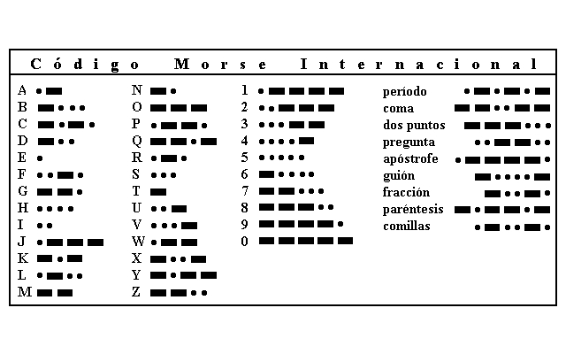

Código Morse
El sistema representa las letras del alfabeto, los números y otros signos mediante una combinación de puntos, rayas y espacios. Cada punto representa una unidad y cada raya tres unidades. El sistema que invento Samuel Morse fue mejorado después por un ayudante suyo llamado Alfred Vail. Tras su introducción en Europa se hizo evidente que el código original Morse no era adecuado para la transmisión de textos que no fueran en inglés, al faltarle códigos para letras con signos diacríticos. Para remediar esta deficiencia se diseñó en una conferencia europea de naciones, celebrada en 1851, un Código Morse Internacional al que también se le conoce como Código Morse Continental. Aunque los dos sistemas son similares este último es más simple y preciso. Por ejemplo, las rayas en el Código Internacional son de longitud constante mientras que en el original eran de longitud variable.
Código Morse

Formas de transmitir el Código Morse:
La raya se interpreta acústicamente con un sonido largo o visualmente con una ráfaga de luz larga. El punto con un sonido corto o con una ráfaga de luz corta. Lo más utilizado para desarrollar el aprendizaje del código Morse para todo el mundo es la utilización de un silbato o una linterna
También se utilizan otros símbolos para escribir en papel los mensajes, que son las barras diagonales “/”. Significado:
/ = Separación de letras
// = Separación de palabras
Ejemplificación del Código Morse . .-.. / .- ...- .- -. -.-. . / . -. / .-.. .- / -.-. --- -- ..- -. .. -.-. .- -.-. .. --- -. / -.. . / .-.. --- ... / -.. .- - --- ... / .- / .- ...- .- -. --.. .- -.. --- / -.. . / - .- .-.. / -- .- -. . .-. .- / --.- ..- . / .- .... --- .-. .- / . -. / ...- . --.. / -.. . / ..- - .. .-.. .. --.. .- .-. / . .-.. / . -. -.-. .-. .. .--. - .- -.. .- / -.. . .-.. / -.-. --- -.. .. --. --- / -- --- .-. ... . / ... . / ..- - .. .-.. .. --.. .- / .-.. .- / . -. -.-. .-. .. .--. - .- -.. .- / -.. . .-.. / .- ... -.-. .. ..
Traducción:
El avance en la comunicación de los datos a avanzado de tal manera que ahora en vez de utilizar la encriptada del código Morse se utiliza la encriptada del ASCII